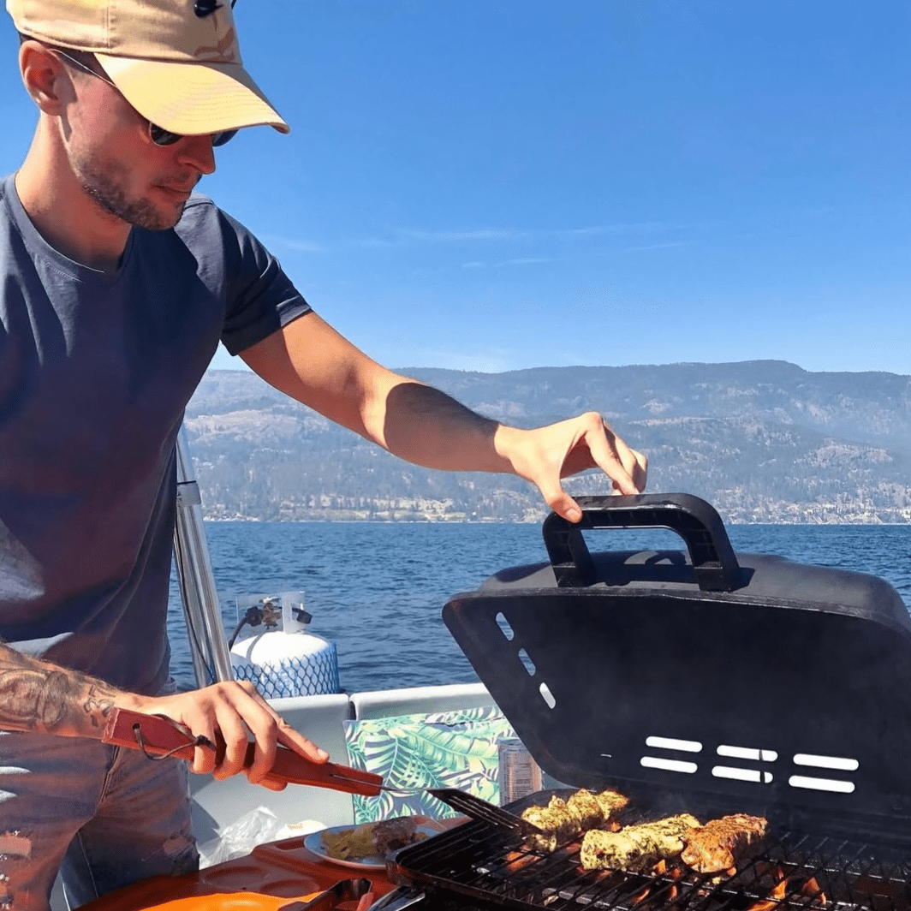

Ben Constanty
Nonstop cooking things.
Been in the game since 2011. Built 9 companies. Some were bootstrapped, some were funded. Some worked out, some were just meh.
Building is the only constant. INTJ, IFYKYK.
These ventures have generated $100M+ in revenue. We earned the trust of 400+ global brands in the process. Among them Rolls Royce, P&G, Dior, Chubb, Thales and Roche.
Some of the things I've worked on:
- Sourcing Force, a procurement SaaS. Co-founded and scaled to $20M ARR. Half a billion dollars in corporate spend has flowed through the platform. Made the Financial Times FT1000.
- BME Care, a B2B e-commerce platform for PPE supply. Co-founded and scaled to $7M in under a year. Built a supply chain and procurement interface in response to the global PPE shortage caused by Covid.
- Smartlink, a non-custodial escrow solution. Co-founded and raised $3M. Built to eliminate trust issues in large cross-border transactions using smart contracts. Phased out of the project.
- Vortex, an automated market maker (AMM) on the Tezos blockchain. Co-founded and hit $100M in peak trading volume. Was backed by the Tezos Foundation. The platform was acquired.
- The Blox, a startup accelerator focused on blockchain applications. Founded with early guidance from ex-Techstars Pat Riley. Our 25+ pre-seed portfolio startups secured $40M+ in funding from top-tier investors like Techstars, Animoca Brands, Ubisoft, and Tim Draper. Ran two cohorts before 2022 kinda sorta nuked the party.
- Augmented Nation (Formerly Metacircle), a think tank of 100+ corporate members from McKinsey, The Sandbox, RTFKT, Disney and more. Co-founded with my friend Philippe Rodriguez. Played a role in defining regulatory standards for virtual worlds and JONUM in Europe.
These days, I'm building Skip the Hype, the last-stop for startup intelligence. I also help founders and c-levels amplify their influence to drive business outcomes through Wisperin.
I occasionally invest in startups through ,Stakk Ventures.
Get the full picture here.
Newsletter
Finding blind spots in tech and finance.